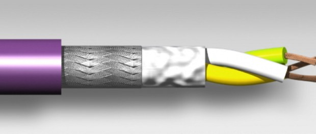
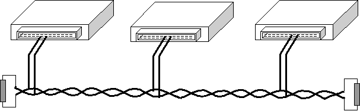
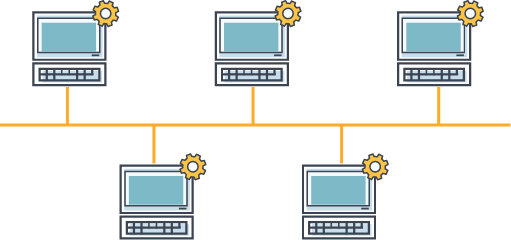
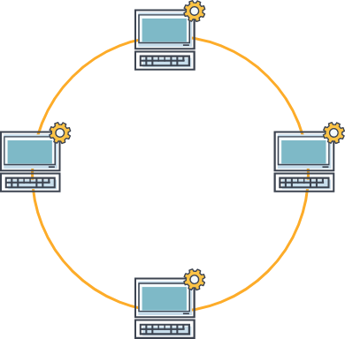
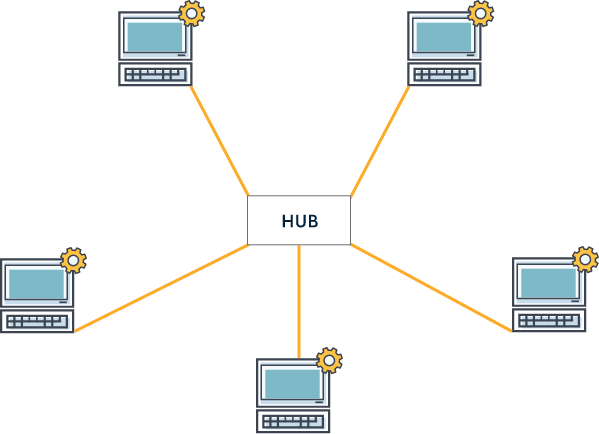
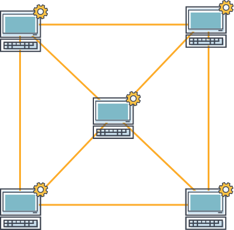
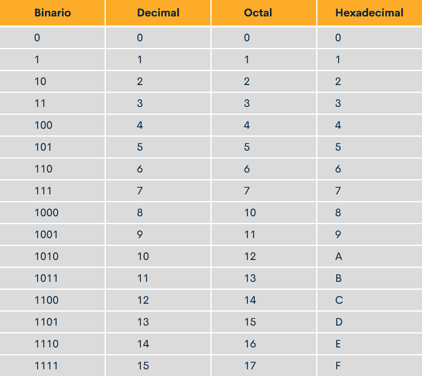
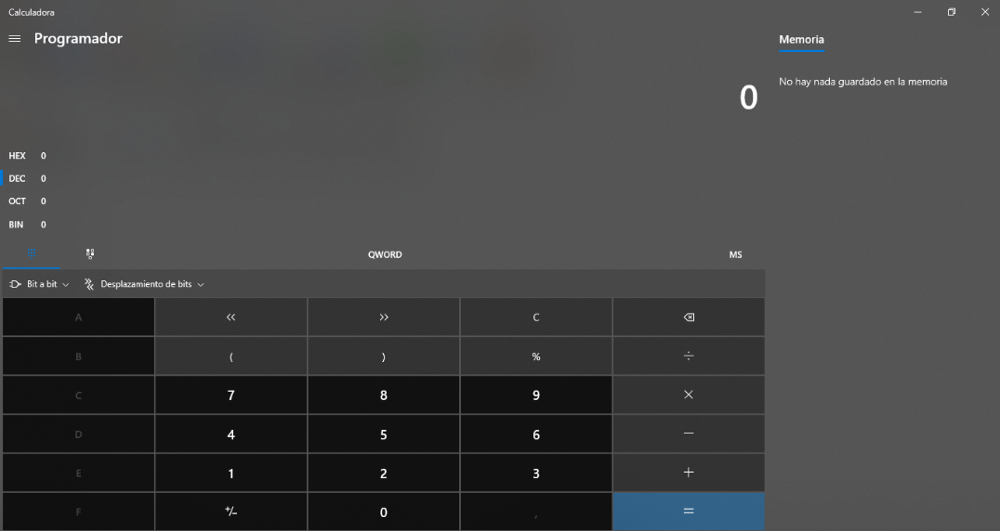
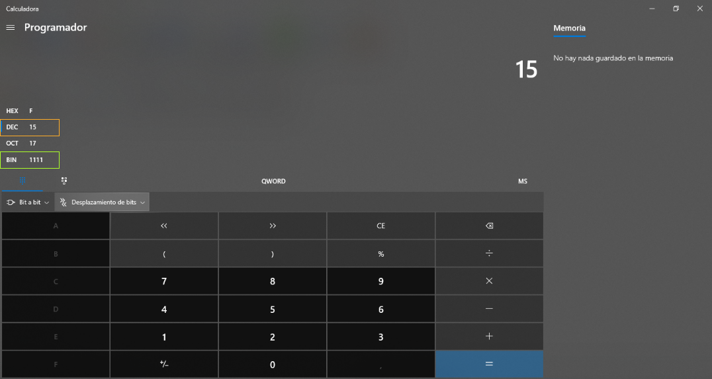

Introducción
El aprendiz apropiará conocimientos de la normativa del proceso ECCL y reconocerá los referentes de evaluación de acuerdo con lineamientos del organismo certificador.
El Servicio Nacional de Aprendizaje- SENA, mediante el Artículo 12, del Decreto 249 de 2004, es el responsable en Colombia de evaluar y certificar las competencias laborales de los colombianos y a través del Artículo 19 del Decreto 933 de 2003 está autorizado para evaluar y certificar las competencias laborales: "El Servicio Nacional de Aprendizaje-SENA regulará, diseñará, normalizará y certificará las competencias laborales”. Este proceso se ha convertido en una importante herramienta para que el sector productivo identifique las brechas de cualificación de los trabajadores y así pueda definir e implementar políticas y estrategias para el desarrollo y gestión del talento humano.El proceso gestión de certificación de competencias laborales, se diseña desde la Dirección del Sistema Nacional de Formación para el Trabajo - DSNFT y se ejecuta en los Centros de Formación del SENA a nivel nacional.
1. Fundamentos en redes de comunicación
Es importante repasar algunos conceptos que se hacen necesarios para tratar los temas de redes de comunicación. Estos permitirán enfrentarnos a los conceptos a estudiar y permitirá consolidar los conceptos de las redes de comunicación.
1.1 Introducción
El protocolo de comunicación CAN BUS, es de uso obligatorio para los sistemas que controlan las emisiones del vehículo. Sin embargo, los fabricantes han considerado usarlo en otros sistemas debido a la efectividad en la transmisión de la información.
De acuerdo a lo anterior, la complejidad de los sistemas es mayor dado el alto número de módulos conectados entre sí, por consiguiente, su diagnóstico se hace también más complejo.
A través de las redes de comunicación, se comparte información y pueden tener varias maneras de conexión. Se puede comentar, que en la actualidad hay varios conceptos a tener en cuenta, además del manejo e interpretación de equipos de alta tecnología.
1.2 Estructura, organización, modo de comunicación
La información que se transmite a través de las redes de comunicación es compartida entre los módulos, para ello pueden presentarse varias maneras de interconectar los elementos físicos que componen la red y esto crea características especiales.
La topología de las redes: lineal, anillo, estrella o malla.
El bus de comunicación lineal o en bus :
Comparte la información en un solo cable y todos los nodos se conectan a este. La ventaja con la configuración lineal, es que todos pueden recibir y entregar mensajes.
La desventaja es que, al ser un solo cable, la apertura del circuito causa la interrupción total del circuito.
Puede ser también que el circuito se abra desde el cable principal a uno de sus nodos, para este caso, el daño es en un solo módulo, pero la información de este no puede entregarse a los demás.
La topología de la red en anillo:
Consiste en que cada estación de trabajo se une a otra y a otra, hasta que el circuito se cierra formando un anillo.
Tiene la ventaja, que presenta una tasa de errores muy baja y como desventaja que, si el circuito se abre, la red deja de funcionar.
La topología en estrella:
Se crea ubicando un nodo en el centro y de este se conectan los demás a su alrededor.
La ventaja es que, si la red o un nodo falla, el resto de la red continúa trabajando. Caso contrario, que si el nodo principal falla, toda la red deja de operar.
La topología en malla:
Se caracteriza porque cada nodo se encuentra conectado a uno a más de los nodos de la red. Es una red muy estable, pero es muy costoso su montaje.
Organización
Multimaster
Master - slave
TDMA
Multimaster
Varios nodos de esta red, pueden enviar información sin autorización de otros nodos. Los nodos pueden transmitir mensajes si consideran que la red se encuentra libre y todos los módulos tiene el mismo status. La ventaja de esta configuración, es que como ningún módulo tiene más status que otro, la vuelve más resistente a la falla del sistema.
Las desventajas son que los mensajes pueden sufrir colisiones ya que no tienen priorización, para ese caso es necesario del uso de bits de priorización en los mensajes.
Master – slave
Este sistema es usado especialmente en LIN BUS y se caracteriza porque un nodo tiene control de la comunicación o master, por sobre su esclavo o slave. El esclavo solo responde cuando el maestro lo cuestiona.
TDMA
Time Division Multiple Access o Acceso múltiple por división de tiempo. Este sistema le asigna a cada módulo una ventana de tiempo en la que se le permite transmitir los mensajes.
1.3 Sistema binario, octal, decimal y hexadecimal
Los mensajes se envían a través de la red con señales digitales, de manera que se crean los códigos binarios. El bit (binary digit) es la unidad mínima de información y solo se usan los dígitos 0 y 1. Este sistema se usa en los computadores por su simplicidad del uso de solo dos dígitos, a diferencia del sistema decimal que maneja 10 dígitos.
Por consiguiente, los mensajes se pueden transmitir teniendo como referencia dos valores de tensión: 0 Volts para representar el dígito cero (0) y 5,0 Volts para representar el dígito uno (1). Con estos dos dígitos puede transmitirse cualquier mensaje de las variables que registran los sensores, después de pasar por un módulo de control. La siguiente es una tabla que compara valores binarios contra valores decimales.
Por lo tanto, se puede realizar cualquier cálculo matemático que se hace con el sistema decimal. Lo primero que se debe saber son los procedimientos para pasar de decimal a binario y de binario a decimal.
Una manera rápida de hacerlo es usando la calculadora de su computador y seleccionando Programador
Ya en Programador se selecciona la opción decimal y para el ejemplo podría digitarse 15. De manera inmediata, en la pantalla aparece el valor 1111 en BIN para valores binarios.
También para el mismo valor se dan los resultados en hexadecimal y octal.
1.4 Velocidades de transmisión
La velocidad de transmisión se mide en bits por segundo (bit/s). Pueden enviarse en paquetes de las maneras siguientes: bits, miles de bits o millones de bits por segundo, los cuales se abrevian bit/s, kbit/s o Mbit/s
Clase A, velocidades hasta de 20 kBit/s
Clase B, velocidades entre 20 kBit/s y 125 kBit/s
Clase C, velocidades entre 125 kBit/s y 1000 kBit/s
Clase C+, velocidades entre 1 Mbit/s y 10 Mbit/s
Clase A: LIN BUS – Local Interconnect Network - usa velocidades hasta 20 kBit/s y su configuración es de bus lineal. Se compone de un solo cable de cobre. Se utiliza en sistemas de confort y de control de elementos de carrocería o en el sistema de carga.
Clase B: se conoce como LS-CAN o Low Speed CAN con velocidades de transmisión de hasta 125 000 bits por segundo (125 kbit/s), se usa especialmente en las comunicaciones electrónicas de los sistemas de carrocería y confort. La clase B utiliza cables de cobre trenzado y es un bus lineal.
Clase C: conocido como HS-CAN o High Speed CAN. Su velocidad de transmisión va desde los 125 kBit/ hasta 1 MBit/s. Sin embargo, es más común encontrarlo en 500 kBit/s. Sus aplicaciones en el vehículo se encuentran en los sistemas del tren de potencia y en los sistemas de seguridad como frenos ABS/EPS y SRS (bolsas de aire y cinturones de seguridad). También usan pares de cables trenzados de cobre.
De igual manera, puede usarse otros protocolos de comunicación con funciones específicas, ya que algunos sistemas no requieren una tasa alta de transmisión de información y en otras, es necesario el uso de mayor velocidad de transmisión de información.
Se encuentra también el MOST Bus – Media Oriented Systems Transport. Utilizado especialmente para transmisión de audio y video. Utiliza una topología de anillo y su velocidad puede ser hasta 22 Mbit/s. Se transmite a través de cables de fibra óptica.
Actividad didáctica

¡Pon a prueba tu conocimiento!
La siguiente actividad tiene como propósito validar los conocimientos relacionados con el tema Normativa vigente proceso ECCL.
IniciarGlosario
Baudio: Es una unidad de medida de la velocidad en sistema de comunicaciones y se mide en bits por segundo (bit/s).
Dominante:Equivalente al nivel lógico “0” correspondiente a 0 Volts.
Multimaestro:Referente a los módulos de control que en una red pueden realizar funciones de maestro teniendo el mismo nivel.
Recesivo:Equivalente al nivel lógico “1” correspondiente a un valor de tensión dependiendo del protocolo.
Material complementario
| Autor, (año del documento o material), Nombre del documento o material. | Tipo de material ( Video, capítulo de libro, articulo, otro) | Enlace del Recurso o Archivo del documento o material |
|---|---|---|
| Microcontrolador - Qué es? y sus partes – microcontroller | video | Descargar |
Referencias bibliográficas
AUDI AG (2002). Nuevos sistemas de CAN-Bus – LIN, MOST, BluetoothTM. Ingolstadt Germany
Bosch, R (2007). Automotive Networking. Germany Robert Bosch GmbH
Cano, M. A. (2012). Mantenimiento de redes multiplexadas (uf1104). ProQuest Ebook
Centralhttps://ebookcentral-proquest-com.bdigital.sena.edu.co
Electrónica y Telecomunicaciones (2019, octubre 1 ). Microcontrolador - Qué es? y sus partes – microcontroller.video.https://www.youtube.com/watch?v=C_CcRGIwqrE
Fotografías y vectores tomados de https://www.shutterstock.com/ y https://www.freepik.es/
Licencia Creative Commons
CC BY-NC-SA
Ver licencia.